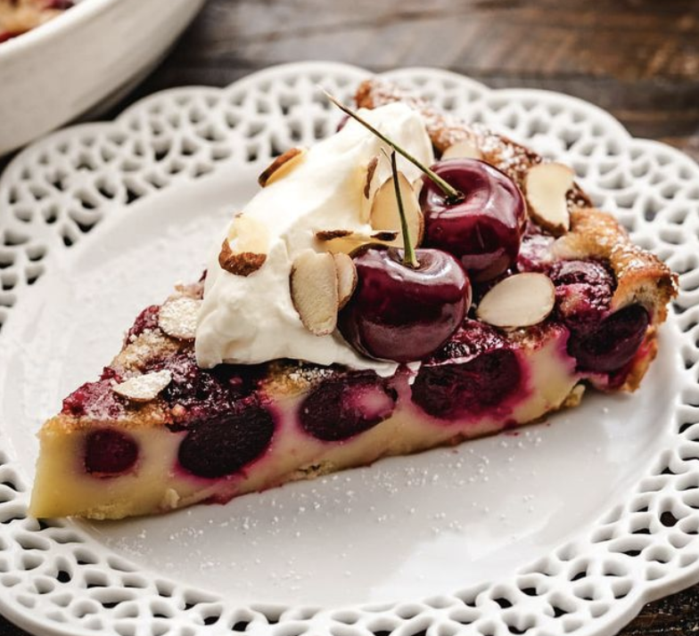

CHERRY CLAFOUTIS

INGREDIENTS
2 cups fresh sweet cherries, pitted
2 tablespoons blanched slivered almonds
3 large eggs
1/2 cup granulated sugar (can reduce to 1/4 cup)
1 tablespoon brown sugar
1/8 teaspoon salt
1/2 cup all-purpose flour
1 cup whole or 2% milk
3/4 teaspoon almond extract (can sub 2 teaspoons of amaretto)
1 1/2 teaspoons vanilla extract
Powdered sugar, for dusting
INSTRUCTIONS
-
Preheat the oven to 350°F.
-
Butter and lightly flour a 9x9-inch or 10x7-inch baking dish. Scatter the cherries and slivered almonds over the bottom of the dish.
-
Whisk the eggs, granulated sugar, and brown sugar together until combined. Whisk in the salt and flour until smooth. Then whisk in the milk, almond extract, and vanilla extract.
-
Pour the batter into the baking dish over the cherries and slivered almonds.
-
Bake at 350°F for 35 to 45 minutes or until lightly browned and a tester inserted into the center comes out clean. Check about halfway through the baking, and if the top is getting well browned, tent it loosely with aluminum foil.
-
When you pull it out of the oven, it will wiggle a bit, which is normal. Place on a wire rack to cool. The clafoutis will have puffed up quite a bit and will deflate while cooling.
-
When cool, dust the clafoutis with powdered sugar. Serve.